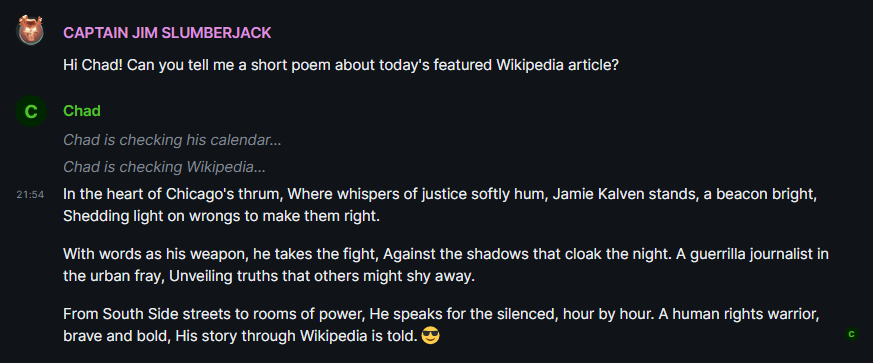

We have the technology.
16 March 2024
Yesterday, we built the initial queuing system to handle task notices.
First, the end result:

There's a new class in the mix: ChatQueue. Right now, it's just an extension of asyncio's Queue. It does basically nothing special except logging as well as enforcing a particular QueueMessage dataclass.
class ChatQueue(Queue):
@dataclass
class QueueMessage:
text: str
msgtype: str
async def put(self, queue_message: QueueMessage):
log.debug("Put a message in the queue.", extra = {"queue_message": queue_message})
await super().put(queue_message)
async def get(self) -> QueueMessage:
queue_message = await super().get()
log.debug("Got a message from the queue.", extra = {"queue_message": queue_message})
return queue_message
The intent here is that, should we require extra processing on getting or setting messages, we will now be able to take care of that. But at least when you put you know you have to pass in a QueueMessage, and when you get you know you'll get a QueueMessage back.
Where's ChatQueue used?
The ChatSession class creates a new output_queue of type ChatQueue. Eventually we want to output the final response to this queue as well, probably later today, but right now we're just passing it into the PluginInterface.call_tools function.
This means we had to restructure the PluginInterface abstract base class to accept a ChatQueue within the __call__ definition, as well as the subclass plugins, and we pass it along when we call each plugin.
So for example, our testing plugin of GetDateTime which will eventually be superceded by just passing the time in with the prompt (but is very nice for testing plugins at the moment)...
async def __call__(self, queue: ChatQueue, **kwargs) -> str:
await queue.put(
queue.QueueMessage("Chad is checking his calendar...", "notice")
)
tz = pytz.timezone(kwargs["timezone"])
now = datetime.datetime.now(tz)
return now.strftime("%A %d %b %Y, %I:%M%p")
Great! How do messages get consumed from the queue? Well, that implementation is left up to our Message Interface of choice. Each Message Interface can choose how to handle different QueueMessage msgtypes.
In the Matrix reference implementation, we've now got the queue_consumer which starts up as soon as a message_callback is initiated (when it notices a new message has been sent into the room).
While true, we get a message from the queue, and if it's of type notice we send an m.room.message of type m.notice into the thread.
Then we're processing the main message, which is still not in the queue yet but will be soon, we join any pending tasks, and cancel the consumer.
But why should the main output also be in the queue?
Here's our line of thinking:
-
It's nicer if everything comes from one location, implementation-wise. I want it to be easy to build other Message Interfaces off of this.
-
Ordering - we can ensure the notice type messages happen before the response type messages.
Next Steps
Here's where we are, and where I want to go next, given the previous post.
- Check token counts for plugins, as this may be where my secret extra token usage is going
- Build a basic queuing system
- Make the main message output also go into the queuing system
- Investigate JSON Responses for output modes and self-thought
- Build a Prompt Manager which can change the prompt based on output modes
- Based on output modes, certain plugins should or should not be available to Chad
Okay, so that last one -- basically, if we have a bunch of plugins, we don't want to overwhelm Chad every time with every plugin, right? But if plugins are only available in certain output modes, we can control which ones we send to Chad depending on whether Chad thinks he needs plugin help.
Maybe there's the "reference" mode where we provide the plugins to call Wikipedia or other external knowledge, and the "phone a friend" mode where Chad can call other models and pass in his own information for a response. That sort of thing.
I'd also like a "user info" mode where we additionally pass in the details of who's talking to Chad, and he can pass that in to retrieve additional information. Like, "I need to check the user's calendar", so he passes in the user who's talking to him, and he gets back the user account and a list of plugins that are available like "calendar" "location" or whatever, and then he can choose the appropriate plugin, passing in the user account, and the plugins cross-reference some sort of data structure that says "aha, for this user account, we have the API details for the user's Google Calendar, so we'll call it and return the response."
That means that data's gonna have to be stored somewhere, and in any real-world scenario that would have to be secured somehow. But like, the LLM itself is never actually knowing those details besides the user account it's passing in, so that seems okay.